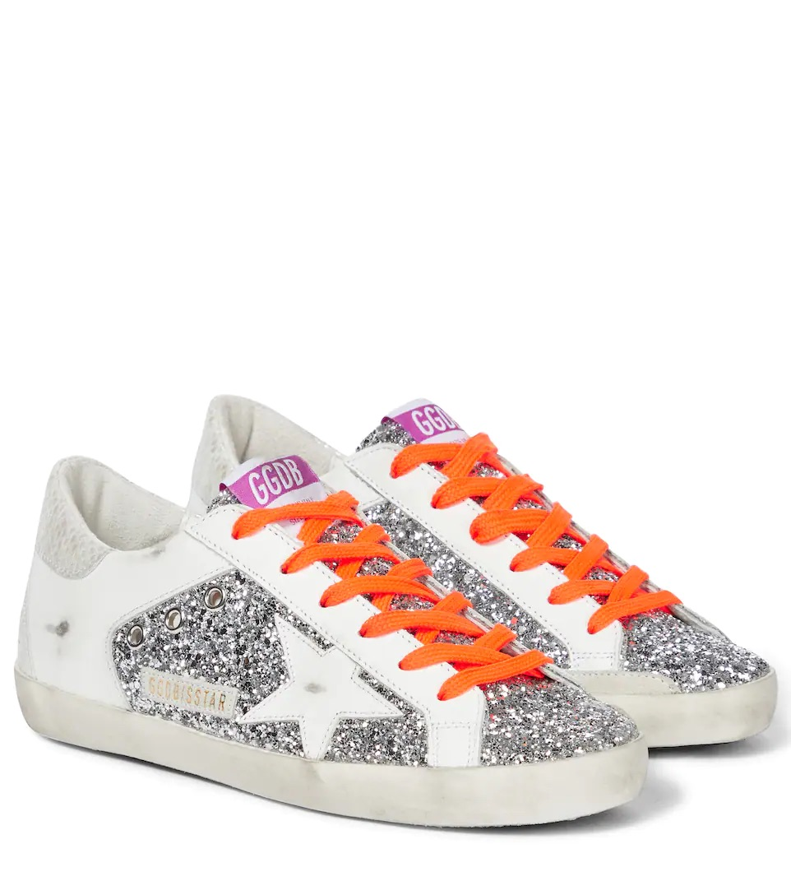
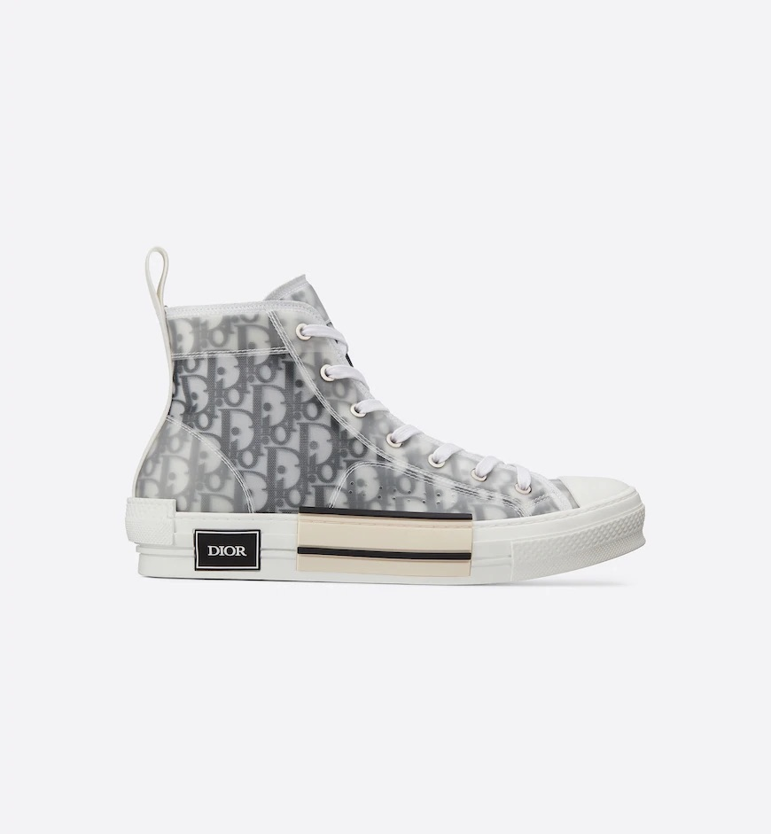
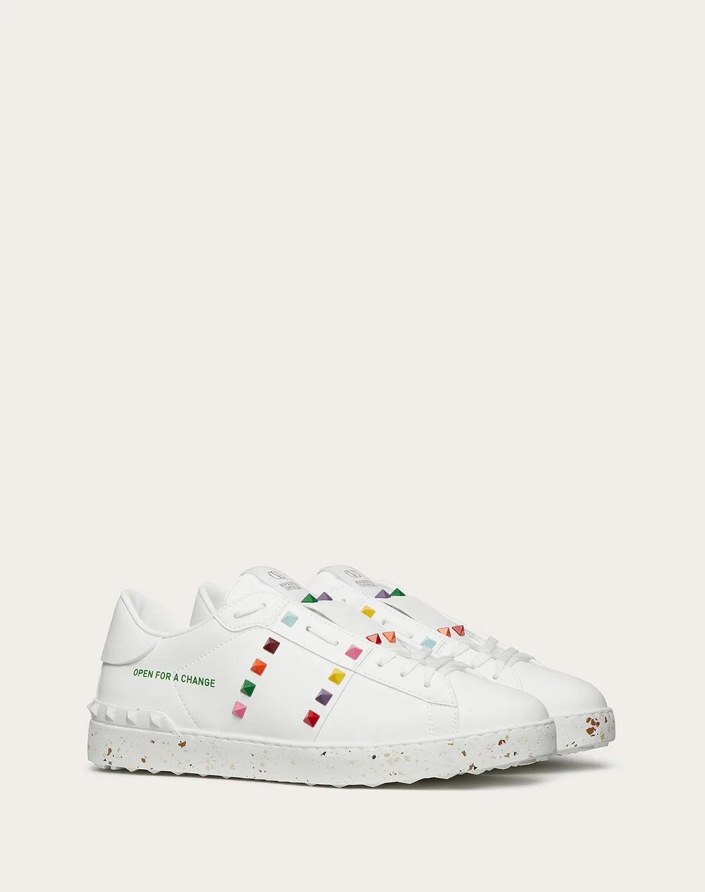
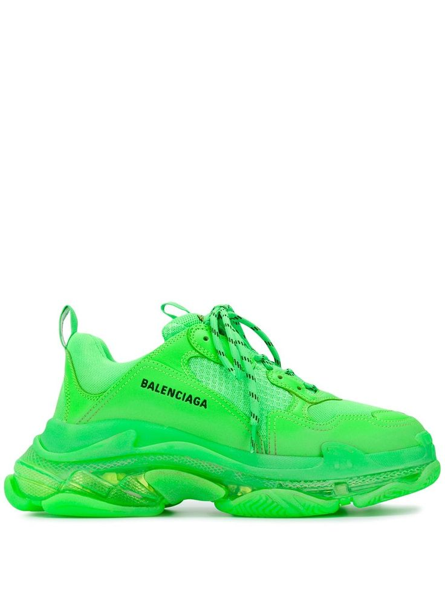
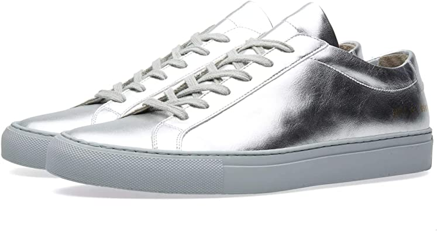
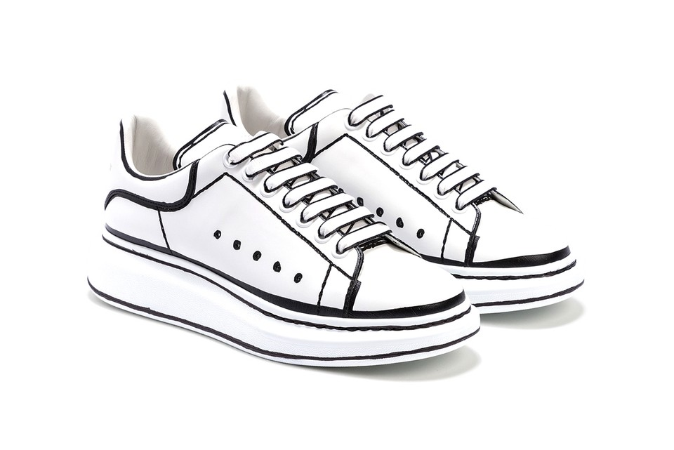
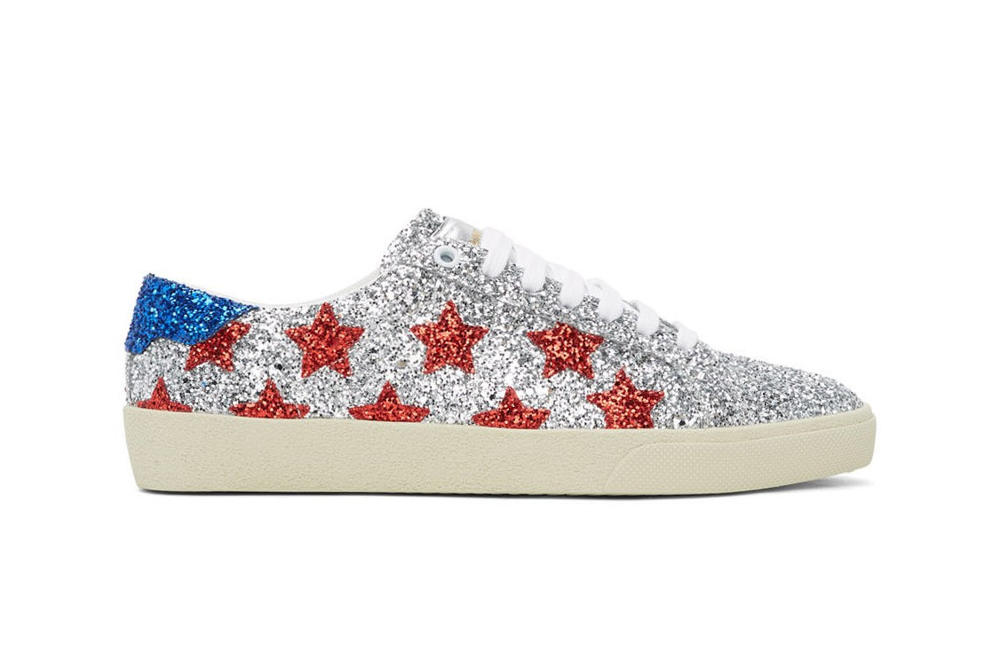
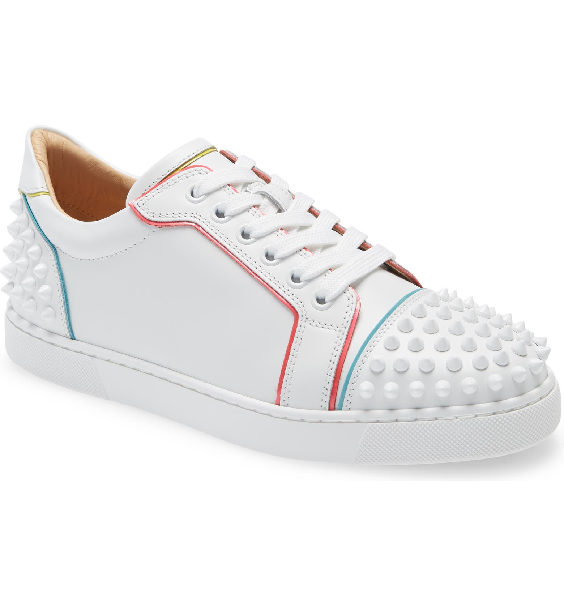
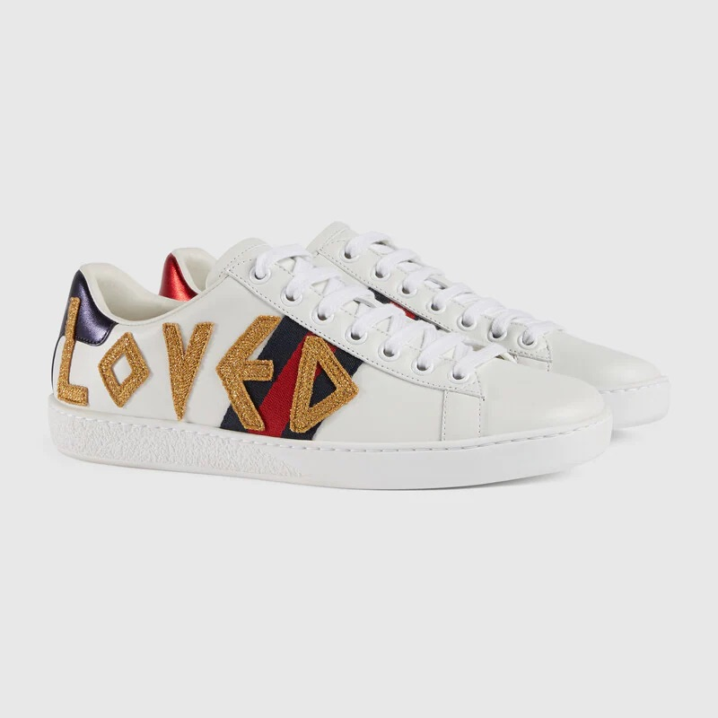

Luxury fashion comes from designers and labels associated with high levels of quality, exclusivity, and price.
As sneakers have made their way to the forefront of modern fashion, luxury brands have responded with premium, innovative, and sophisticated styles.
Sam Lobban, senior vice president of designer and new concepts at Nordstrom, identifies two major categories in wich designer sneakers fall into: classic and fashion-forward.
Classics, according to Loban, are, "iconic sneaker styles that have been updated with elevated fabrication, construcion and design details."
Opposed to, "the more fashion-forward concepts in terms of innovation and design."
The former tends to have a stronger focus on comfort and luxury materials, whereas the latter is more concerned with aesthetics.
The following are some examples of luxury designer sneakers.

Golden Goose Super-Star Sneakers. Golden Goose is an Italian luxury brand, many of whose products include handmade leather. Each pair of their Super-Star sneakers are given unique detailing that provides a distressed look to the shoe.

Dior B23 High Top 'Dior Oblique' Sneakers. Designer Kim Jones' first Dior Homme sneaker collection debuted in Paris Fashion Week in December 2018, and featured this shoe. This sneaker was then released to the public on April 4th, 2019.

Valentino Garavani Multicolor Pyramid Studded Sustainable Sneakers. The upper and the lining of this sneaker is made with a bio-based polyurethane and viscose material, making it sustainable.

Balenciaga Triple S Clear Sole Sneakers. Prior to this shoe, Balenciaga was making a Triple S sneaker without the presence of an air bubble in the sole. This addition to the shoe resembles Nike's Air Max in its full translucense.

Common Projects Achilles Leather Low-Top Sneakers. Common Projects is an American luxury footwear company, and one of the only luxury sneaker producers whose original intention was always to make luxury sneakers. All of their shoes are hand-stitched in Italy, often with Italian Nappa leather.

Alexander McQueen Oversized Sneakers. The late Lee Alexander McQueen rose to fame in the fashion world with his provocative and innovative design ideas. In 1992, he founded his own label, Alexander McQueen, and went on to become chief designer at Givenchy. This oversized sneaker silhouette has become an iconic staple of the brand.

Saint Laurent Court Classic Sneakers. YSL's take on luxury footwear. This colorway was released on May 23, 2020 to commemorate US holiday Memorial Day.

Christian Louboutin Vieira 2 Leather Sneakers. Christian Louboutin shoes in general are known for their iconic red soles. Louboutin began making stilettos; he was a freelance designer for companies like Chanel and YSL. In 1991, he started his own shoe salon in Paris, with his shoes gaining popularity among many celebrity clientele.

Gucci Ace 'Loved' Sneakers. This sneaker uses Gucci's vintage tennis shoe silhouette, Ace, and revisits the brand's "Blind for Love" motto with an embroidered applique on its side.